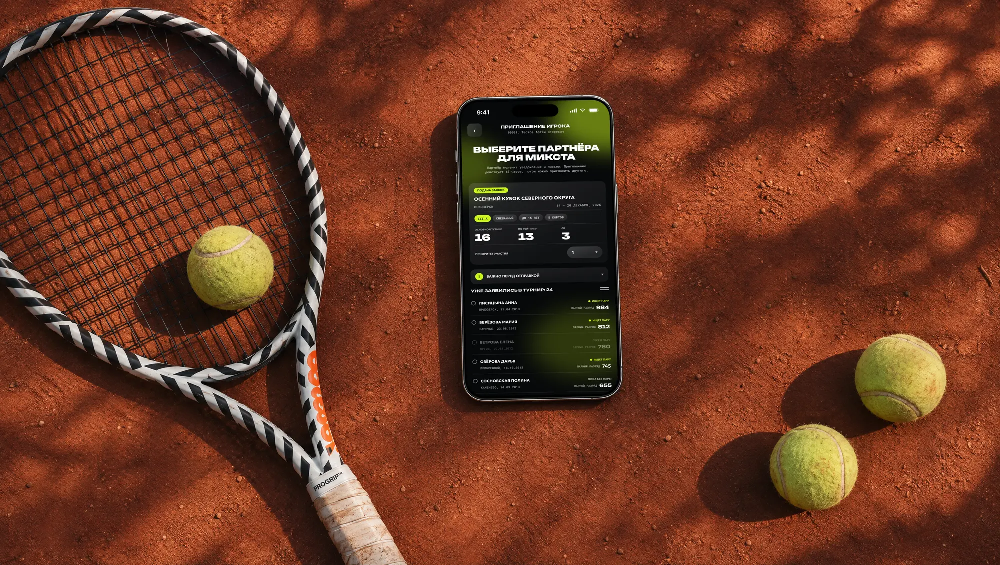
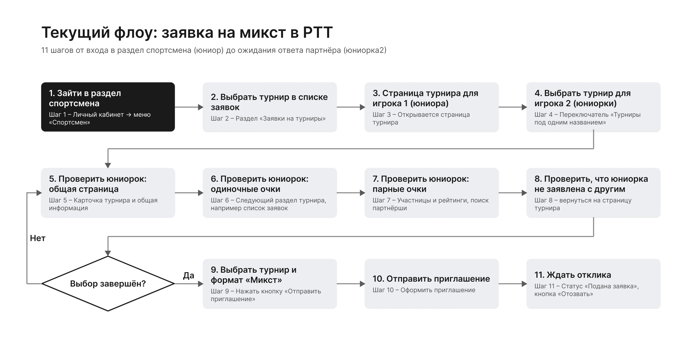
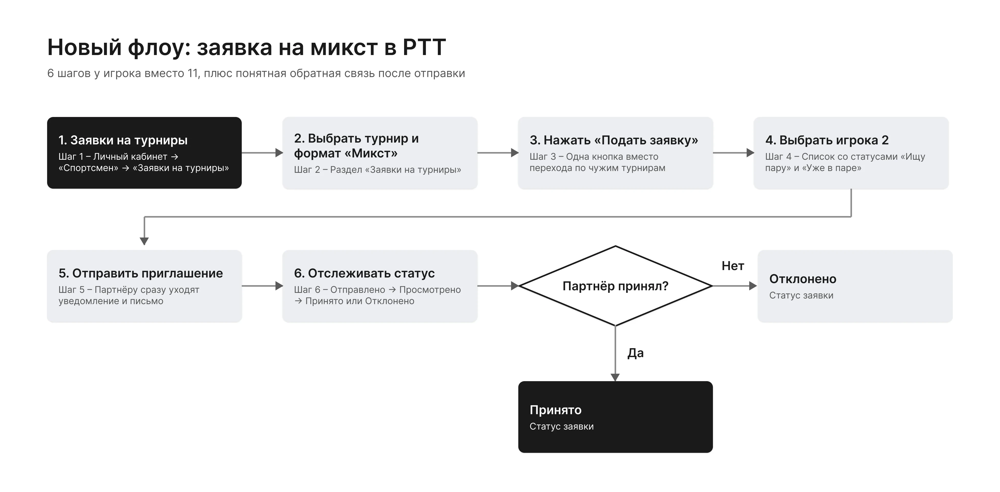
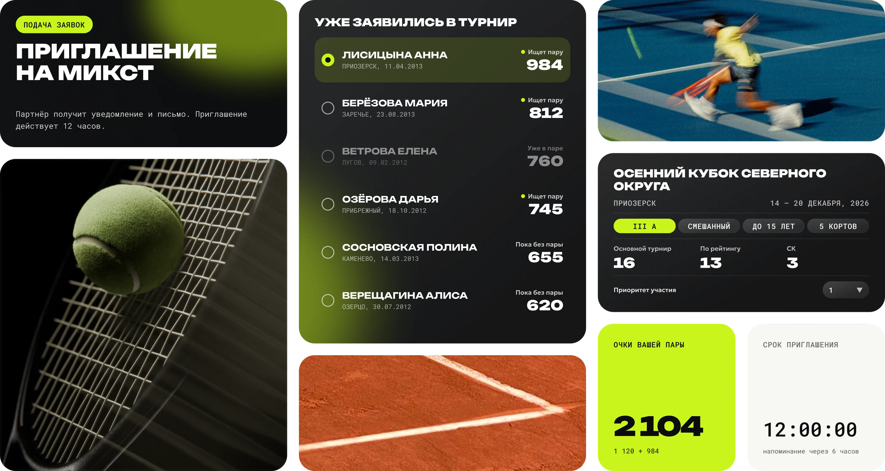

Контекст
Чтобы сыграть микст (парный разряд), игроку нужно подать заявку вместе с партнёром. В РТТ это делается через приглашение: один игрок выбирает партнёра, тот должен принять приглашение, и только после этого пара попадает в турнир.
Действует регламент: не более двух турниров парного разряда на неделе, приоритет участия 1 или 2, список после определённого срока «замораживается». Любая лишняя неопределённость в процессе — это стресс для родителей и игроков и негативное отношение к организаторам.

Цели
- Для приглашающего игрока: подать заявку на микст быстро и без ошибок, всегда понимая, что происходит с приглашением.
- Для игрока, принимающего приглашение: сразу заметить приглашение и ответить на него в один клик.
- Для организатора: меньше звонков от игроков с просьбой «помочь найти пару», больше прозрачности и упрощение процесса организации турниров.
Задачи
- Разобрать текущий путь и найти шаги, которые можно оптимизировать
- Показать явно статус приглашения: отправлено, просмотрено, принято, отклонено, истекло
- Помочь выбрать партнёра: собрать в одном месте очки в парном разряде, статусы «Ищет пару / Пока без пары / Уже в паре»
- Встроить правила регламента в интерфейс так, чтобы не перегрузить экран
Проблема: 11 шагов и отсутствие реакции после отправки
Игрок проходит через страницы турниров для юношей, для девушек, страницы одиночных и парных очков — и только потом получает возможность отправить приглашение. После этого он остаётся с единственной кнопкой «Отозвать».

Боли на последнем шаге:
- Не известно, открыл ли партнёр приглашение
- Многие просто игнорируют приглашение, если не хотят играть
- Многие вообще не видят, что приглашение есть
Боли из открытых опросов игроков и их родителей.
Что сделала
На основе общения с игроками и их родителями пересобрала страницу. Использовала уже существующие технические возможности: список игроков турнира, парные очки каждогои отдельное поле поиска для тех, кто ещё не подал заявку.

| Что добавила | Зачем |
|---|---|
| Очки в парном разряде | Игроку важны парные очки партнёра |
| Статусы «Ищет пару», «Пока без пары», «Уже в паре» | Видно, к кому имеет смысл обращаться; занятых партнёров не прячем, а помечаем |
| Сохраняем поиск вне турнира | По правилам один из игроков пары может не играть в одиночной части турнира |
| Сохраняем приоритет участия | Регламент РТТ: приоритет 1 или 2 выбирается в момент отправки |
| Плашки с текстом из регламента | «Важно перед отправкой» и «Что будет после отправки» свёрнуты, чтобы не перегружать экран |
| Срок 12 часов | Сказано сразу, в подзаголовке: после истечения можно пригласить другого |

Интерактивный макет
Пролистайте экран, выберите партнёра и отправьте приглашение — откроется новый экран статуса. Справа можно сымитировать ответ партнёра. Данные игроков вымышленные.
Выберите партнёра для микста
Партнёр получит уведомление и письмо. Приглашение действует 12 часов, потом можно пригласить другого.
Приглашение отправлено
Партнёру ушли уведомление и письмо со ссылкой.
Игроки «Уже в паре» недоступны для выбора
Что сделала бы дальше
Проверила бы на 5–6 игроках, оценила бы, замечают ли партнёры приглашение в первые 6 часов, и сравнила бы долю принятых приглашений до и после. Отдельно проработала бы сценарий партнёра: экран «принять или отклонить» и состояние «приглашение истекло».